HRI surveys every two years. CEA monitors Akumal Bay. Oceanus tracks 18 restoration sites. Do they talk to each other? Do they share data?
Mangrove loss drives seagrass turbidity drives reef algae. We know this. We can't prove it. We can't act on it. Not yet.
Every intervention decision is made on incomplete information. GROAN fixes that — but only with your data in it.
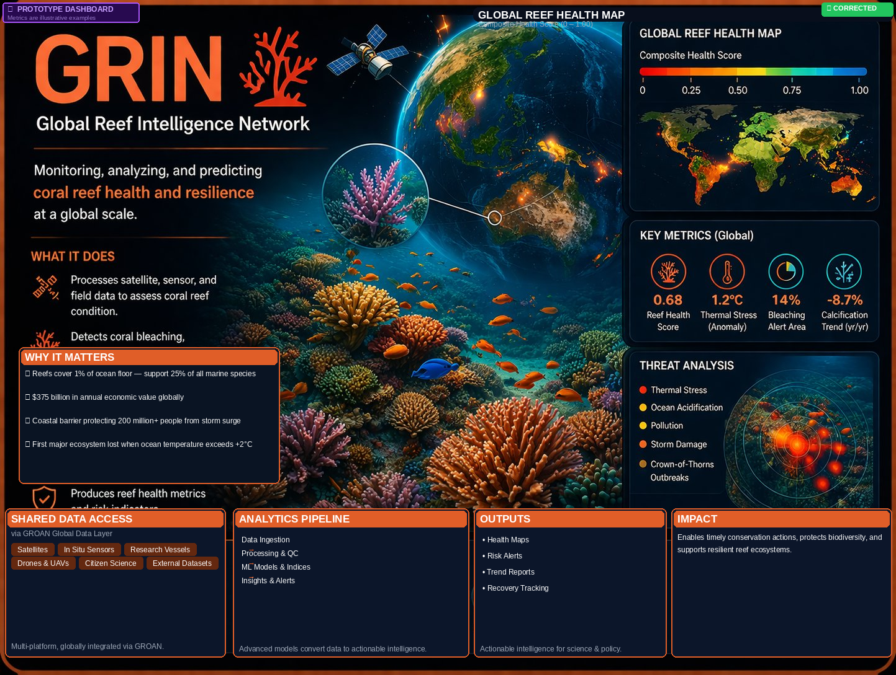
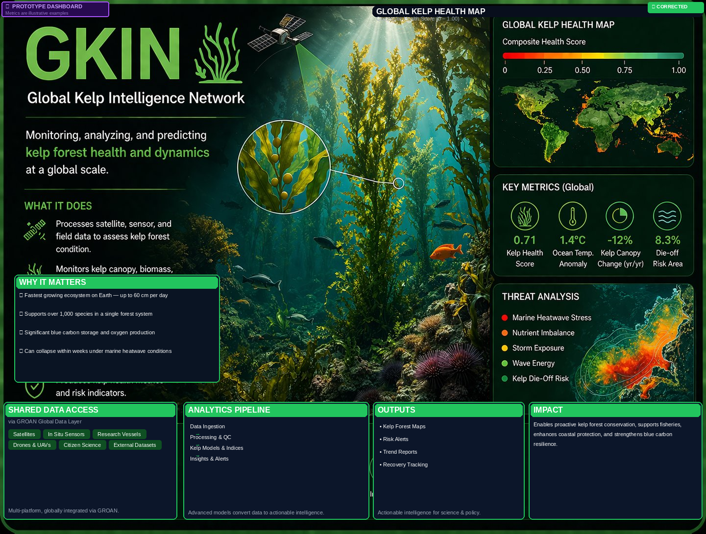
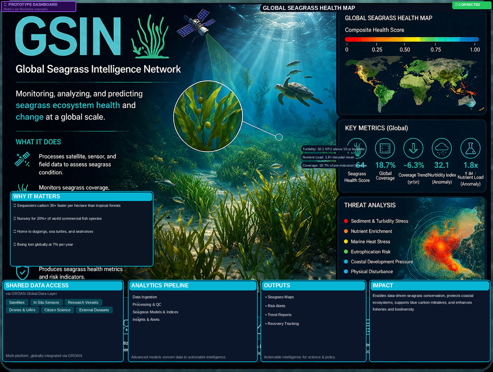
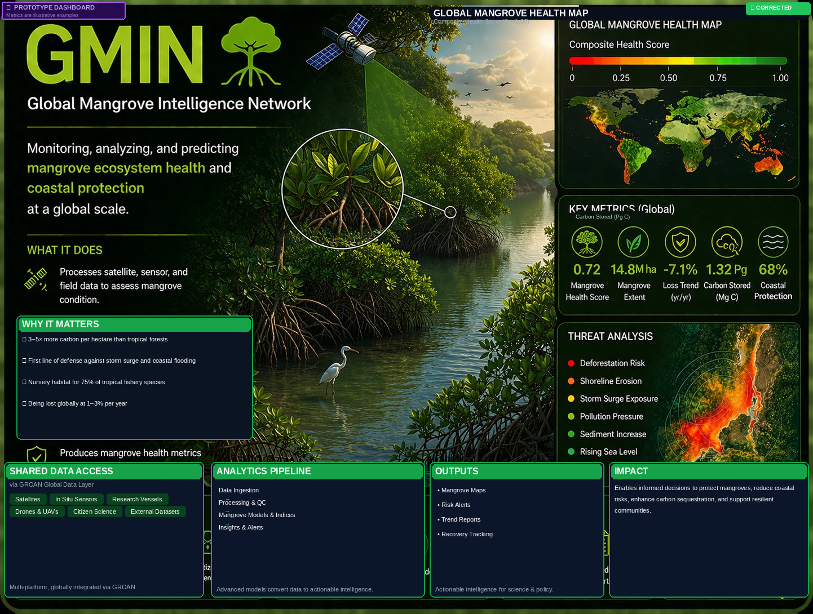
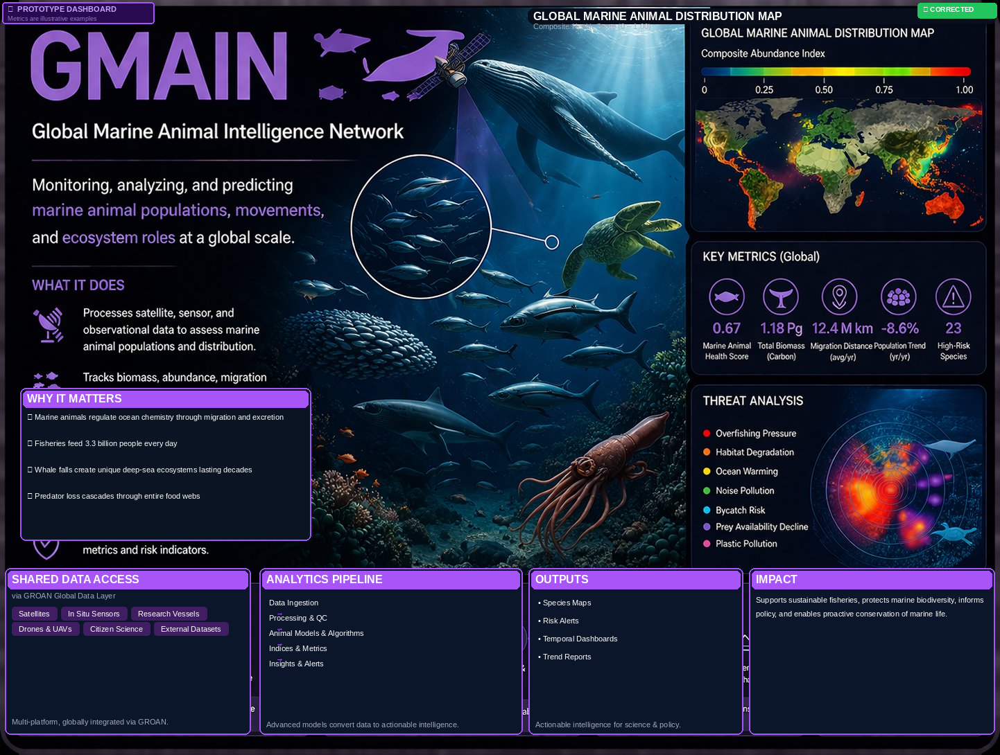
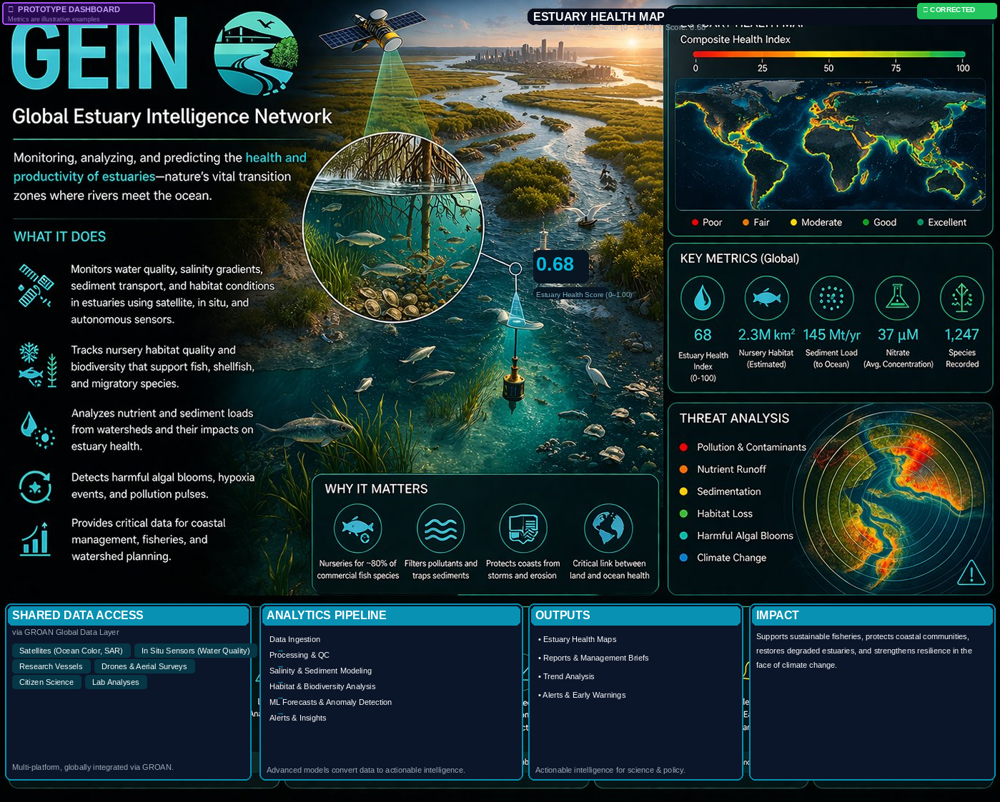
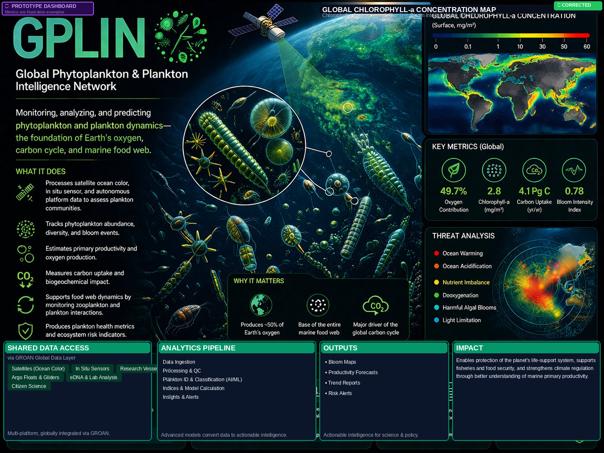
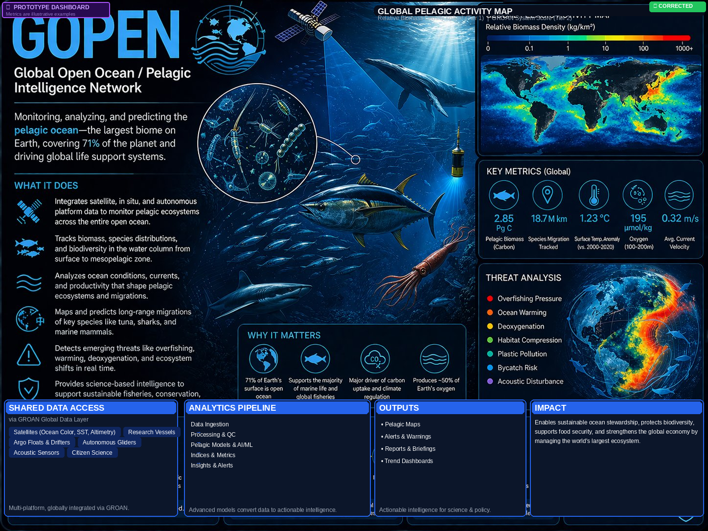
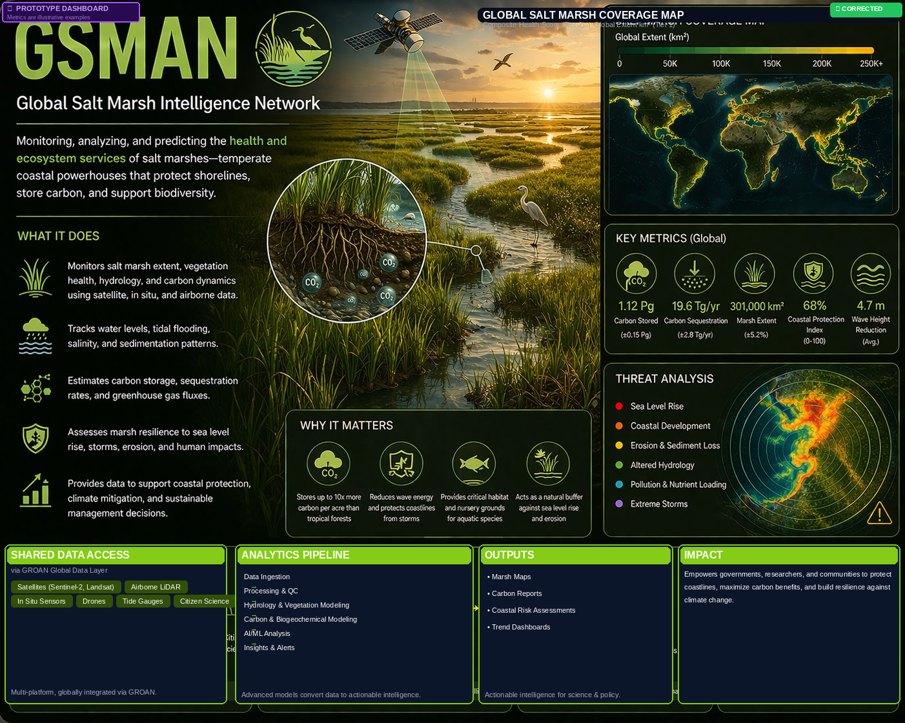
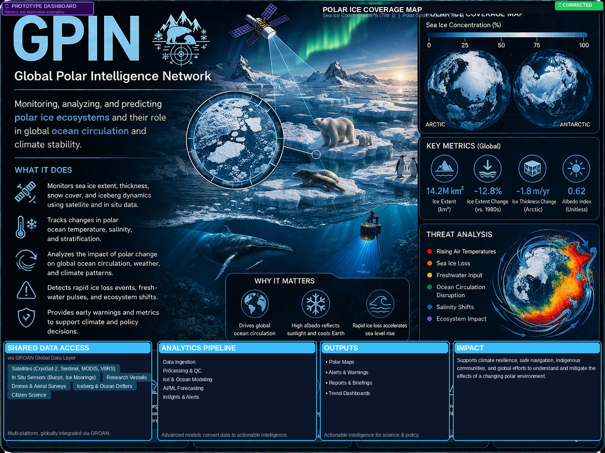
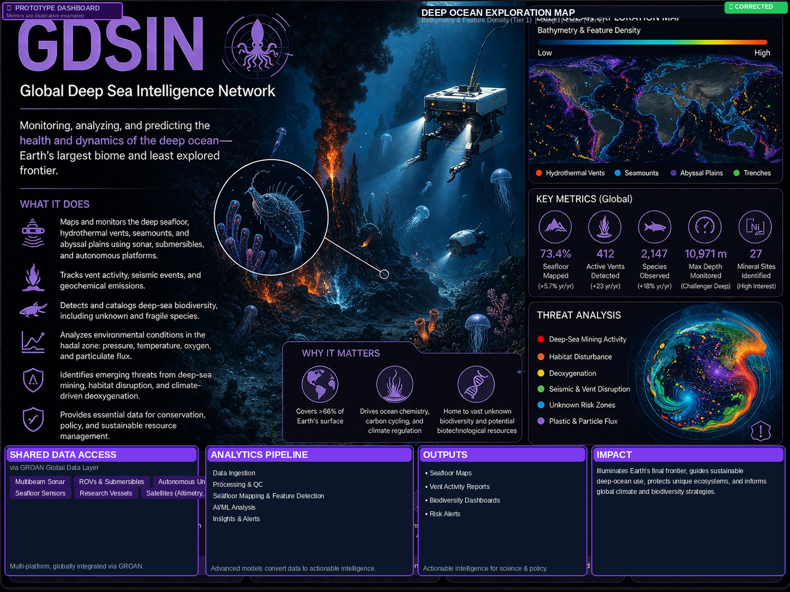
| DS RANGE | STATE | ACTION |
|---|---|---|
| 0.80–1.00 | Critical | Deploy within 72h |
| 0.60–0.79 | High Priority | Plan in 2–4 weeks |
| 0.40–0.59 | Moderate | Increase frequency |
| 0.20–0.39 | Low Priority | Standard schedule |
| 0.00–0.19 | Minimal Action | Maintain protocol |
A high DS doesn't mean the reef is dying. It means a high-value intervention opportunity exists right now — and GROAN can tell you exactly what it is and why.
Low GMIN + Low GRIN at the same site = the reef is being undermined by mangrove loss upstream. No single-ecosystem system sees that. GROAN does.
Joint Paper 1: GROAN Decision Score validation against HRI Report Card grades — the disagreements are the findings.
GMIN detects mangrove buffer loss → GROAN flags elevated sediment at nearby restoration sites → DMAP-CAL adjusts transplant species recommendation. Oceanus acts on causal intelligence.
CEA's Mexico presence makes this consortium a legitimate LMIC partnership — critical for grant applications, government facilitation, and regional credibility.
| Article | What It Covers |
|---|---|
| Art. 1 | Purpose & Scope — validation, joint data, publications, commercial deployment |
| Art. 2 | IP — Background IP stays with NRCL. Your data stays yours. |
| Art. 3 | Profit Sharing — 51/16.3/16.3/16.3 on commercial revenue only |
| Art. 4 | Commitments — what each party does (practical, achievable) |
| Art. 5 | Governance — Steering Committee, quarterly calls, decision rights |
| Art. 6 | Term & Termination — 2-year term, clean exit, 90-day notice |
| Art. 7 | General — Arizona law, no partnership, severability |